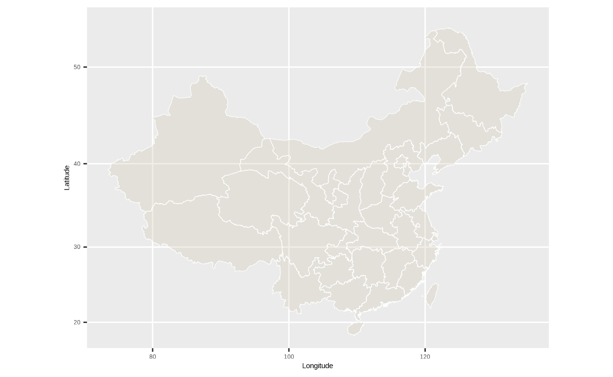
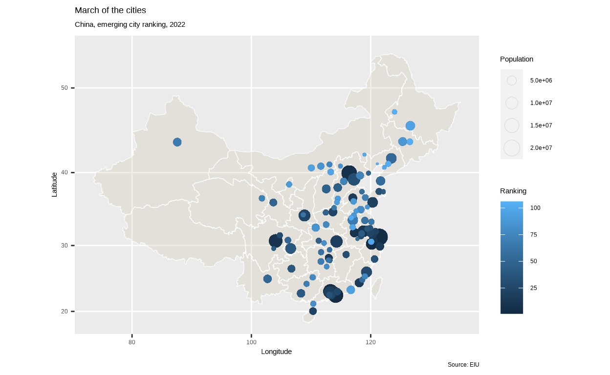
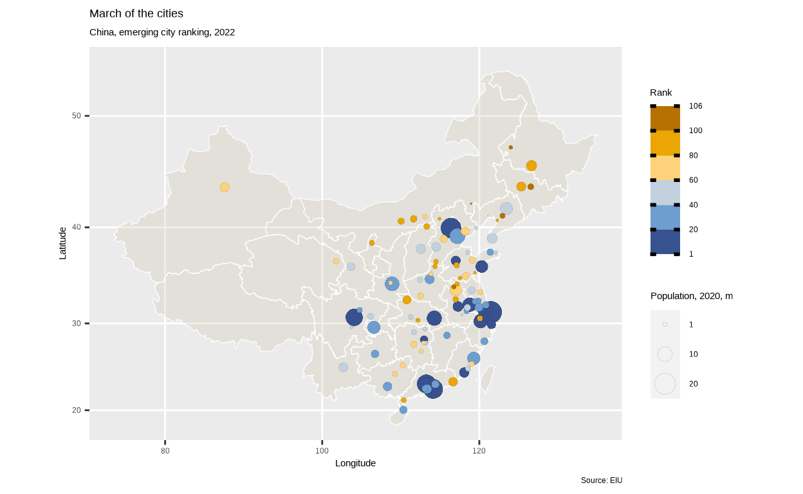
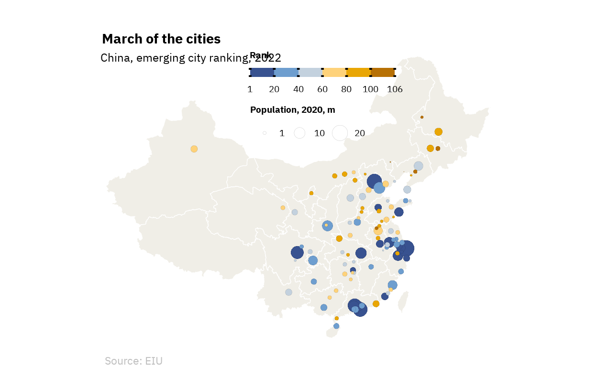
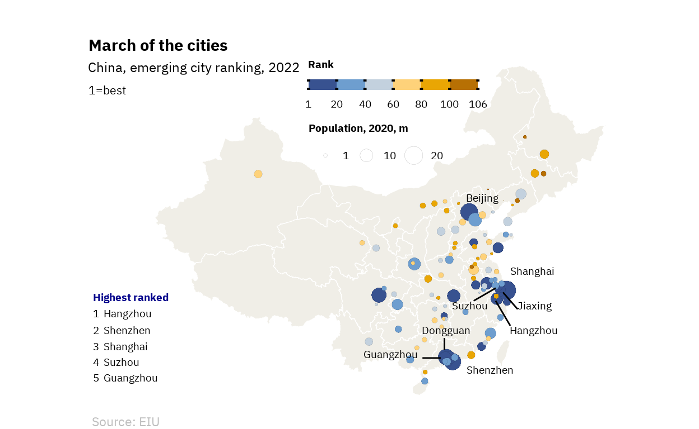
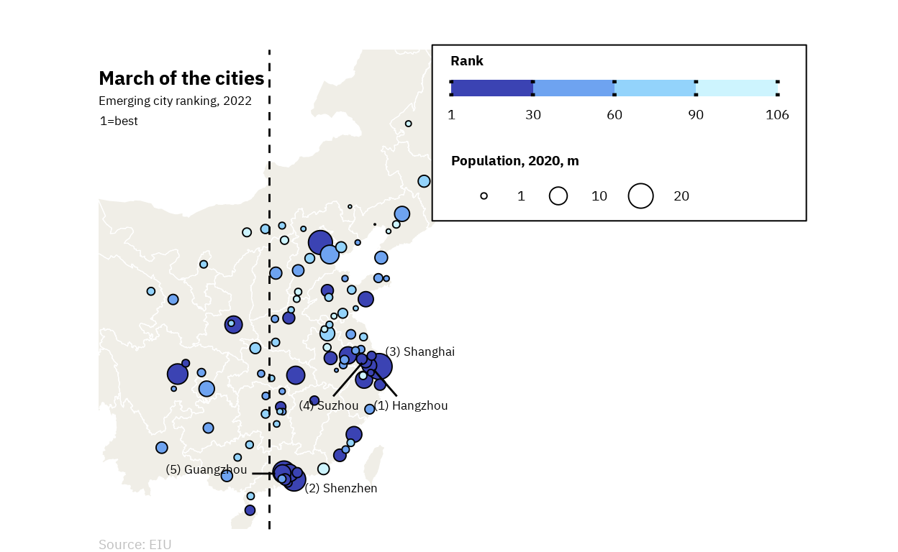
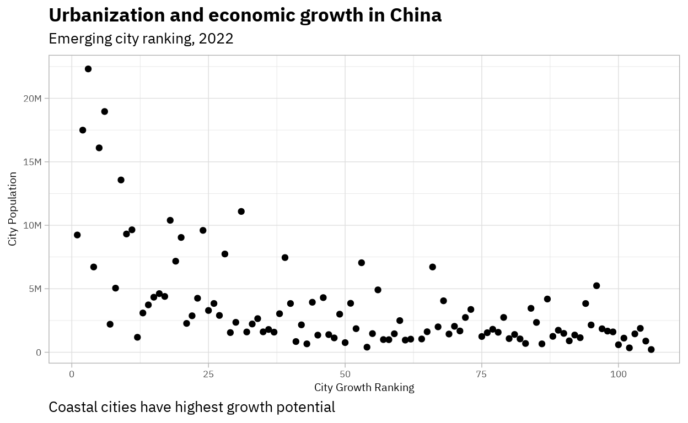
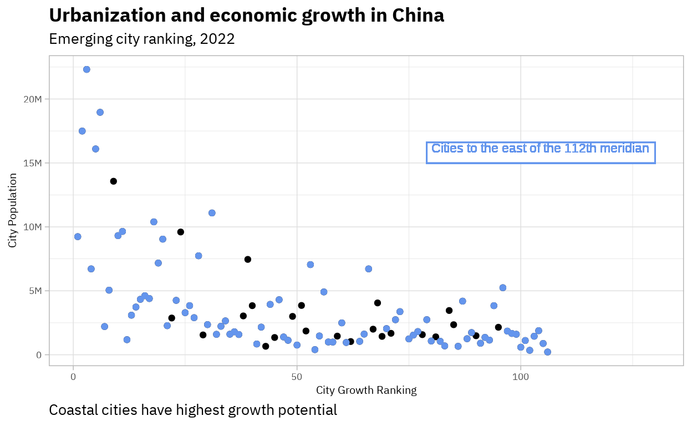
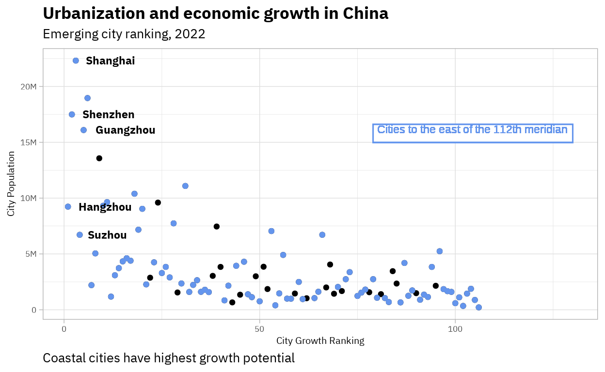

A layer-by-layer construction of a map of China containing information on forecasted GDP growth and population for over 100 cities.
As both a cause and consequence of China’s rapid economic growth, the proportion of the country’s population living in cities has soared from 20% in 1980 to 60% in 2020. However, China’s Zero-Covid policy has stilted growth significantly. The “China Emerging City Rankings, 2022” Report, launched by the Economist Intelligence Unit (EIU), assesses the growth potential of 108 cities predicted to have a population of more than 1 million by 2025. Scores are calculated using historical data and forecasts on variables including demography, the local economy or the environment.
This post will seek to replicate this map, propose incremental enhancements and suggest an alternative visualization that depicts the relationship between growth potential, population and location (or distance to the coastline) taking cities as our units of analysis.
Diving into data collection, we obtained the data on the ranking and population of our units of analysis from the EIU (‘Global Geo-Political Trends and Economics’ section) after contacting their office in Asia by email.
Once we have loaded both sets of data, the summaries below show that the ‘ranking’ dataset contains data on scores for 106 cities (ordered from highest, i.e. Ranking = 1, to lowest) while the ‘population’ dataset includes population data for 397 cities in China.
glimpse(ranking)Rows: 106
Columns: 2
$ City <chr> "Hangzhou", "Shenzhen", "Shanghai", "Suzhou", "Guang…
$ Ranking <dbl> 1, 2, 3, 4, 5, 6, 7, 8, 9, 10, 11, 12, 13, 14, 15, 1…glimpse(population)Rows: 397
Columns: 2
$ City <chr> "Shanghai", "Beijing", "Shenzhen", "Guangzhou", "…
$ Population <dbl> 22315474, 18960744, 17494398, 16096724, 13568357,…In order to get both attributes (“Ranking” and “Population”) on the same dataset, we used a left_join to merge both datasets by the unit of analysis (“City”). This produced a dataset with both variables for the 106 cities provided by the EIU. Please note that, while the original map in the article by ‘The Economist’ includes 108 cities, the EIU only provided us with data on 106.
In order to obtain the “longitude” and “latitude” of each city, we used the world.cities database. This database includes these and other variables for over 40,000 cities in the world. We then filtered the cities in China and selected (as well as renamed) the variables of interest to later on construct my final database.
We then merged the location dataset (‘data’) and the dataset with information on ranking and location (‘output’).
The data also required some cleaning and adjustment. First, there were two cities with the same name (i.e. Suzhou) in the EIU ranking. Since they are located in different provinces, we used population and location data to cross check which city corresponded to which score provided by the EIU and renamed one of them to establish the difference. Second, there were several other cities in the ‘data’ dataset with the same name as cities in the ‘output’ one, which led to there being more than one row for each unit of analysis in the ‘fulloutput’ table. We removed the appropriate rows, as well as the rows for which latitude and longitude data were not available (i.e. NAs for those variables). We are left with 104 rows.
fulloutputclean <- fulloutput[-c(5, 23, 49, 51, 70, 81, 104, 113),]
fulloutputclean <- fulloutputclean[!is.na(fulloutputclean$Latitude)
& !is.na(fulloutputclean$Longitude), ]
head(fulloutputclean, 5)# A tibble: 5 × 5
City Ranking Population Latitude Longitude
<chr> <dbl> <dbl> <dbl> <dbl>
1 Hangzhou 1 9236032 30.2 120.
2 Shenzhen 2 17494398 22.5 114.
3 Shanghai 3 22315474 31.2 121.
4 Suzhou 4 6715559 31.3 121.
5 Guangzhou 5 16096724 23.1 113.The final step in data processing was obtaining the data to plot the underlying map of China and its provinces. The ggplot2-china-map repository contains such information. We used the readOGR function to read the ‘shapefile’, cleaned the data and fortified into a dataframe. We then instructed that the islands in the South China Sea not be drawn by selecting only observations with “AREA” above 0.005. Finally, again, we renamed variables accordingly.
china <- rgdal::readOGR(dsn=("./china_shapefile/"), layer="bou2_4p", verbose=FALSE)
china@data$id<-rownames(china@data)
china.points<-fortify(china, region="id")
china.df<-join(china.points, china@data, by="id")
china<-subset(china.df, AREA>0.005) %>%
dplyr::rename("Latitude"="lat",
"Longitude"="long",
"Grouping"="group")Using the data loaded in ‘china’ in the last step, we use geom_polygon() to draw the underlying map. The aes argument maps the longitude and latitude columns to the x and y coordinates, respectively. This function is also used to specify the fill and the transparency (alpha) level of the map.
We then use geom_path() to set the line demarcating the province limits. After indicating the use of the same variables and the same dataset as for the geom_polygon() function, we set the color and size of the border.
Further, coord_map() sets the coordinate system for the map by projecting the defined portion of the Earth onto a flat 2D plane.
p <- ggplot() +
geom_polygon(data=china,
aes(x=Longitude, y=Latitude, group=Grouping),
fill="cornsilk3",
alpha=0.3) +
geom_path(data=china, aes(x=Longitude, y=Latitude, group=Grouping),
color="white",
size=0.2) +
coord_map()
p
Next, we add the data points at the specific locations of the 104 cities (defined by their latitude and longitude) with geom_point(). Thus, on top of the map, we are plotting a scatterplot using data from ‘fulloutputclean’ where each point represents one city. The size of the point (more specifically, its area) represents its population and its fill depicts the relative position of a given city vis-à-vis other cities in the EIU ranking. We then set a black line around the point (shape=21) while specifying the color and thickness (stroke) of the border.
A title, subtitle and caption are added to replicate the original chart using the labs function.
p2 <- p +
geom_point(data=fulloutputclean,
aes(x=Longitude, y=Latitude, size=Population, fill=Ranking),
shape=21,
color="black",
stroke=0.03) +
labs(title="March of the cities",
subtitle="China, emerging city ranking, 2022",
caption="Source: EIU")
p2
Next, the scale_fill_stepsn() and scale_size() functions are used to customize the appearance of the legends for the color and size aesthetics, respectively.
For the color legend (or rather, fill legend, given our points have borders defined by the color argument as introduced in the previous section), we first specify its title and title position. We then specify the details relating to the ticks and limits between the different boxes of the legend. We set the values for the 7 breaks in the variable ‘Ranking’ so as to create six categories of rank scores. By means of a drawing tool using the hexadecimal system, we set the colors for each of the six categories. Note that higher-ranked cities are represented with shades of blue and lower-ranked cities are represented with shades of orange or brown, whereby darker shades of both colors represent the ends of the spectrum.
For the size legend, we do the same as with the fill legend regarding the title and the breaks, although this time we are specifying 3 breaks. In this case we are also setting the labels for those breaks. This is because, by default, R uses scientific notation for population but the legend title already states that values are provided in millions. Finally, we set the range of the size of the bubbles from 0.04 to 6 mm.
p3 <- p2 +
scale_fill_stepsn(
guide=guide_colorsteps(title="Rank",
title.position="top",
ticks=TRUE,
show.limits=TRUE,
ticks.colour= "black",
ticks.linewidth = 1,
draw.llim=TRUE,
draw.ulim=TRUE,
order=1),
breaks=c(1, 20, 40, 60, 80, 100, 106),
colors=c("#1c2c74", "#5483b3", "#99ccff", "#fcdb9b", "#fcbc04", "#ac6404"),
space="Lab") +
scale_size(
guide=guide_legend(title="Population, 2020, m",
title.position="top",
order=2),
breaks=c(1000000, 10000000, 20000000),
labels=c("1", "10", "20"),
range=c(0.04, 6))
p3
Despite there being a special ‘The Economist’ theme, a completely empty theme (without the default background and axis elements) is what we want. Hence we use theme_void(). Under the theme() function, we first specify the (previously loaded) font most closely resembling the one used in the original map. Concerning title, subtitle and caption, we specify their size, as well as their vertical (vjust) and horizontal justification (hjust). Also using the helping function element_text(), we instruct that the title be bold and the caption have the color “gray”. We then set the position, direction and justification of the legend so that it is horizontal and gets centered to the north of China (approximately where Mongolia would be). We then specify that both legends be left-justified and set the font size for both the title and the text inside the legend (as well as the face in the case of the legend title). Finally, we customize the margins around the legend area and set the key width to 8mm, the key height to 2.5mm and the spacing between keys in the size legend to 0.1mm.
p4 <- p3 +
theme_void() +
theme(text=element_text(family="IBM Plex Sans"),
plot.title=element_text(face="bold", size=22, vjust=-8, hjust=0.05),
plot.subtitle=element_text(size=18, vjust=-10, hjust=0.058),
plot.caption=element_text(color = "gray", size = 17, hjust = 0.05),
legend.position=c(0.73, 0.96),
legend.direction="horizontal",
legend.justification=c("right", "top"),
legend.box.just="left",
legend.title=element_text(face="bold", size=14),
legend.text=element_text(size=14),
legend.margin=margin(1, 1, 1, 1),
legend.key.width=unit(8, "mm"),
legend.key.height=unit(2.5, "mm"),
legend.spacing.x=unit(0.1, 'mm'))
p4
The last step to replicate the original map is the annotations, for which we use the annotate() function. While it may appear to be a caption, the text “1=best” is actually inside the plot and hence is introduced as an annotation. For this and the rest of annotations, we specify the type, the coordinates (x, y), the label, the size and the family (as well as the hjust, vjust, fontface and color for some).
For the textbox in the lower left corner in the original chart, we create a separate annotation for the title in order to be able to set its fontface to bold and assign it a different color. Further, we separate each of the five cities into different annotations as well because grouping them together under the same one led to there being too large of a vertical space between each of the five lines.
For the individual annotations of the eight highest ranked cities on their locations on the map, we simply use the coordinates for each city and adjust them to be able to see which point corresponds to each label. We also added separate annotations with the lines for five cities: Dongguan, Guangzhou, Suzhou, Jiaxing and Hangzhou (type= “segment”). These lines make identifying which label corresponds to each point easier when cities are clustered together.
p5 <- p4 +
annotate("text", x=67, y=51.5, label="1=best",
size=5.5, family="IBM Plex Sans") +
annotate("text", x=65, y=30, label="Highest ranked",
size=5, hjust=0, vjust=0, family="IBM Plex Sans",
fontface="bold", color="blue4") +
annotate("text", x=65, y=28, label="1 Hangzhou",
size=5, hjust=0, vjust=0, family="IBM Plex Sans") +
annotate("text", x=65, y=26, label="2 Shenzhen",
size=5, hjust=0, vjust=0, family="IBM Plex Sans") +
annotate("text", x=65, y=24, label="3 Shanghai",
size=5, hjust=0, vjust=0, family="IBM Plex Sans") +
annotate("text", x=65, y=22, label="4 Suzhou",
size=5, hjust=0, vjust=0, family="IBM Plex Sans") +
annotate("text", x=65, y=20, label="5 Guangzhou",
size=5, hjust=0, vjust=0, family="IBM Plex Sans") +
annotate("text", x=122, y=26, label="Hangzhou",
size=5, hjust=0, vjust=0, family="IBM Plex Sans") +
annotate("text", x=116, y=21, label="Shenzhen",
size=5, hjust=0, vjust=0, family="IBM Plex Sans") +
annotate("text", x=122, y=33, label="Shanghai",
size=5, hjust=0, vjust=0, family="IBM Plex Sans") +
annotate("text", x=114, y=29, label="Suzhou",
size=5, hjust=0, vjust=0, family="IBM Plex Sans") +
annotate("text", x=102, y=23, label="Guangzhou",
size=5, hjust=0, vjust=0, family="IBM Plex Sans") +
annotate("text", x=116, y=41,label="Beijing",
size=5, hjust=0, vjust=0, family="IBM Plex Sans") +
annotate("text", x=123, y=29, label="Jiaxing",
size=5, hjust=0, vjust=0, family="IBM Plex Sans") +
annotate("text", x=110, y=26, label="Dongguan",
size=5, hjust=0, vjust=0, family="IBM Plex Sans") +
annotate("segment", x=113, y=25.5,
xend=113, yend=24) +
annotate("segment", x=110, y=23,
xend=112.5, yend=23) +
annotate("segment", x=117, y=30,
xend=120, yend=31.5) +
annotate("segment", x=123, y=29,
xend=121, yend=31) +
annotate("segment", x=122, y=27,
xend=120, yend=30)
p5
This section starts with a brief discussion of the positive and negative qualities of both the original chart and its replication. First, there are several limitations with our reproduction of the map. First, we were not able to reproduce the curved segments joining Hangzhou and Suzhou with their respective points or bubbles as the chart did not support geom_curve(). We were also unable to imitate the appearance of the fill legend exactly as the one in the original map contains spaces between the different boxes or ranges of scores.
Next, an evaluation of the strengths and weaknesses of the original map is also necessary in order to suggest minor improvements.
Overall, the original map is an effective visualization. The title and subtitle are concise and informative of its purpose and object, i.e. showing how, because of urbanization (“March of the cities”), cities of varying populations on the coast of China have different levels of growth potential as measured by a comprehensive score. The underlying map, which does not encode any information, does not distract from the information being shown as it is given a light color. Moreover, the legends are clear. This is especially important in the case of the size legend, which could be problematic since people perceive areas rather than radii as visual features in circles. In this case, the area of the circle seems to be proportional to population and so it correctly provides a reference point for readers to estimate the population of individual cities. The ‘expressiveness’ criterion is also met, as ordered data (“Ranking”) appears ordered by means of the hue scale. Finally, the annotations help readers focus on a small number of cities (eight for on-the-map annotations and five for the annotation on the bottom left corner), which facilitates the understanding of which cities have highest growth potential as well as of their characteristics (namely population and location).
Therefore, the mapping of data into visual features communicates (and thus helps us understand) the “story” the author wants to tell in a clear, precise, efficient and truthful way.
However, there may be some areas of potential improvement. The chart below includes several changes so as to enhance the ease of decoding visual information.
p <- ggplot() +
geom_polygon(data=china,
aes(x=Longitude, y=Latitude, group=Grouping),
fill="cornsilk3",
alpha=0.3) +
geom_path(data=china, aes(x=Longitude, y=Latitude, group=Grouping),
color="white",
size=0.2) +
coord_map(xlim=c(100, 155), ylim=c(20, 50)) +
geom_point(data=fulloutputclean,
aes(x=Longitude, y=Latitude, size=Population, fill=Ranking),
shape=21, color="black") +
labs(title="March of the cities",
subtitle="Emerging city ranking, 2022",
caption="Source: EIU") +
scale_fill_stepsn(
guide=guide_colorsteps(title="Rank",
title.position="top",
ticks=TRUE,
show.limits=TRUE,
ticks.colour="black",
ticks.linewidth=1,
draw.llim=TRUE,
draw.ulim=TRUE,
order=1),
colors=c("#00008b", "#6495ed", "#87cefa", "#e0ffff"),
breaks=c(1, 30, 60, 90, 106),
space="Lab") +
scale_size(
guide=guide_legend(title="Population, 2020, m",
title.position="top",
order=2),
breaks=c(1000000, 10000000, 20000000),
labels=c("1", "10", "20"),
range=c(0.04, 6)) +
theme_void() +
theme(text=element_text(family="IBM Plex Sans"),
plot.title=element_text(face="bold", size=20,
vjust=-14, hjust=0),
plot.subtitle=element_text(size=13,
vjust=-21, hjust=0),
plot.caption=element_text(color="gray", size=14,
hjust=0),
legend.position=c(1.01, 1.01),
legend.direction="horizontal",
legend.justification=c("right", "top"),
legend.box.just="left",
legend.box.background=element_rect(fill="white"),
legend.margin=margin(5, 15, 5, 10),
legend.key.width=unit(12, "mm"),
legend.key.height=unit(3, "mm"),
legend.spacing.x=unit(0.1, 'mm'),
legend.title=element_text(face="bold", size=14),
legend.title.align=0,
legend.text=element_text(size=14)) +
annotate("text", x=99, y=47.5, label="1=best",
size=4.5, family="IBM Plex Sans") +
annotate("text", x=121, y=28, label="(1) Hangzhou",
size=4.5, hjust=0, vjust=0, family="IBM Plex Sans") +
annotate("text", x=115, y=21.5, label="(2) Shenzhen",
size=4.5, hjust=0, vjust=0, family="IBM Plex Sans") +
annotate("text", x=122, y=32, label="(3) Shanghai",
size=4.5, hjust=0, vjust=0, family="IBM Plex Sans") +
annotate("text", x=114.5, y=28, label="(4) Suzhou",
size=4.5, hjust=0, vjust=0, family="IBM Plex Sans") +
annotate("text", x=103, y=23, label="(5) Guangzhou",
size=4.5, hjust=0, vjust=0, family="IBM Plex Sans") +
annotate("segment", x=110.5, y=23,
xend=112.5, yend=23) +
annotate("segment", x=123, y=29,
xend=121, yend=31) +
annotate("segment", x=117.5, y=29,
xend=120, yend=31.5) +
geom_vline(xintercept=112, linetype="dashed")
p
As suggested by the famous author in the field of visualization Edward Tufte, we should seek to maximize the data-ink ratio when displaying data. To that end, we should ask ourselves whether all elements (“ink”) in the chart are necessary to convey our message. Applying this notion to our map, we set limits for the coordinates through the arguments xlim and ylim inside the coord_map() function. This way, as seen in the map above, we “zoom in” to show the relevant data and remove the area west of meridian 100°. If we did this, we would only lose one observation (i.e. one city) and so it may be worth exploring this alternative. Since we have less “unused” space, we also set the legend background fill to “white” in order to establish a clear contrast between the legend and the map.
Moreover, some changes to the fill legend may increase the ease of decoding visual information on ranking. In order to enhance discriminability on this scale, we reduce the number of categories from six to four. This way, it is easier for readers to figure out the order of cities according to their ranking and relate their scores to location and population without having to distinguish between too many values.
Additionally, despite being a small detail, the choice of the color palette may not be the most appropriate to depict this ordering. There does not seem to be an obvious reason for why stronger colors are assigned to the extremes in the ranking spectrum (i.e. highest- and lowest-ranked cities). Allocating different levels of saturation or lightness of the same hue could be an alternative way of visually conveying the ordering of cities according to growth potential. In the code above, we simply replace the colors for the original ‘40-60’ and ‘60-80’ categories with two lighter shades of blue under the scale_fill_stepsn()function.
Furthermore, the fact that eight cities are annotated on the map and only five are included in the bottom left textbox is not too easy to realize at first and both annotations seem to include redundant information. By removing the textbox and adding the rank numbers directly to the cities annotated on the map, we simplify the visualization without removing essential information.
Finally, in order to emphasize the idea that cities with the highest growth potential are on the coast, we might want to insert a vertical line (we use geom_vline()) at the (arbitrary) level of longitude 112°. This way we can see that among the 10 cities with the highest growth potential, only Chengdu (i.e. the “dark blue” bubble farthest west) is to the west of this longitude.
The final section of this post proposes an alternative visualization to represent the relationship between the population, location and growth potential of cities in China. One possibility is the scatterplot shown below. We plot the ranking on the x-axis and population on the y-axis. We also use the geom_point() function just like in the original map.
We change the title and subtitle of the plot. We also add an informative caption and change the axis labels so as to make it even easier to understand what each variable represents and the message being conveyed. We alter the theme to theme_light() so as to increase the contrast between the background and the text and data points.
This time, by using the scale_y_continuous() function, we change the default scientific notation so that the axis itself shows population in ‘M’ (million). We then set the specifics for the font, title, subtitle, caption, axis title and axis text under the theme() function.
p <- ggplot(fulloutputclean) +
aes(x=Ranking, y=Population) +
geom_point() +
labs(title="Urbanization and economic growth in China",
subtitle="Emerging city ranking, 2022",
caption="Coastal cities have highest growth potential",
x="City Growth Ranking",
y="City Population") +
scale_y_continuous(labels=scales::label_number_si()) +
theme_light() +
theme(text=element_text(family="IBM Plex Sans"),
plot.title=element_text(face="bold", size=26),
plot.subtitle=element_text(size=20),
plot.caption=element_text(size=20, hjust=0),
axis.title=element_text(size=15),
axis.text=element_text(size=13))
p
In general, we can see that higher growth potential (lower value for the variable “City Growth Ranking”) tends to be associated with a larger population, which was perhaps harder to see on the original map. However, we still need to include information about the location (coordinates) of cities. Within the location variable, it seems that longitude is the most important factor: cities closer to the coastline (i.e. farther east, or higher values of x) appear to have higher growth potential. These high-ranking cities seem to be distributed more or less evenly from north to south, hence we disregard the latitude information for simplicity. Therefore, we could encode longitude through the color of the points by highlighting in blue those points representing cities that are located east of the (again, arbitrarily chosen) 112° meridian. We also add a text label (on top of a white rectangle constructed with geom_rect()) to indicate that blue dots represent cities farther east in China.
annotation <- dplyr::filter(fulloutputclean, Longitude>112)
p <- p +
geom_point(data=annotation, color="#6495ED") +
geom_rect(aes(xmin=79, xmax=130, ymin=15000000, ymax=16600000),
fill="white",
color = "#6495ED") +
geom_text(aes(x=80, y=15800000,
label="Cities to the east of the 112th meridian"),
size=6, hjust=0, vjust=0, color = "#6495ED")
p
Finally, to highlight the top 5 cities from the original map, We construct another annotation and insert it as an argument in the geom_text() function. We adjust the size and horizontal justification of the labels, and make them bold.
annotation2 <- dplyr::filter(fulloutputclean, Ranking<=5)
p <- p +
geom_text(aes(label=City),
annotation2,
hjust=-0.2, nudge_x=0.1, size=6,
family = "IBM Plex Sans",
fontface="bold")
p
We can see that highly-ranked cities are all near the coast (i.e. all highlighted in blue because they are east of the meridian 112°), but there is a rather wide range of population sizes among the top 5. For instance, both Shanghai and Suzhou have very high growth potential. Yet, the former has more than 3.5 times the population of the latter. This is because many variables are included in the calculation of scores. For instance, Hangzhou tops the ranking due to its nature as a big tech hub. While government regulation targeting tech firms may hamper its medium- and long-term growth, other factors such as its fiscal position, economic diversity or metropolitan development jointly yield a high growth potential for the city.
All in all, as the caption suggests, it seems that location (whose effect is hard to separate from other historical, economic and environmental factors) is more important than current population as a predictor of future economic growth.